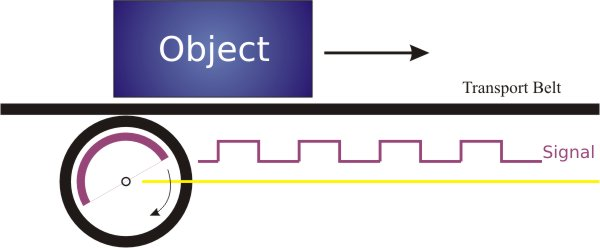
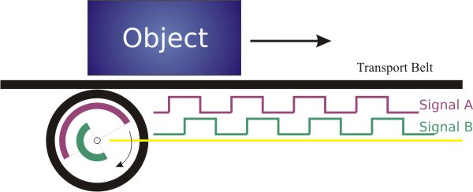
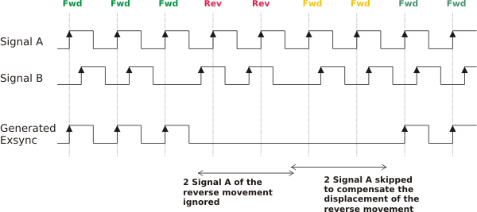

Shaft Encoder
Overwiew
| . |
Description
A Shaft Encoder or Rotary Encoder is used to produce trigger input signals for the Line Trigger. A relative rotary encoder in its simplest form can only measure the speed of the movement and trigger the line camera accordingly to sample the object in equidistant lines. The figure below illustrates a setup where the line camera could, e.g., be triggered on the rising edge of the encoder signal.

If not only the speed of the object can vary, but also the direction of the transport belt (forwards or backwards), one single signal is not sufficent to record continous strips. A shaft encoder that allows to detect if the transport belt is moving forwards or backwards has a second encoder signal (Signal B), that follows the first signal (Signal A) by a fixed angle. The following figure shows an A/B shaft encoder where the line camera could, e.g., be triggered on the edge of the encoder Signal A. If the encoder is rotating forwards, then the Signal B is low at the very moment of the rising signal A, since by definition B follows A.
Is the encoder rotating in the wrong direction (i.e., backwards), the Signal A follows B, since the whole process is reverted. In this case, the signal B is high at a rising signal A, and no trigger signal should be generated.

In order to acquire a continous strip, it is not only nescessary to ignore encoder signals that arise from a reverted rotation, but also to compensate this 'displacement' when moving forward again.

| Forward |